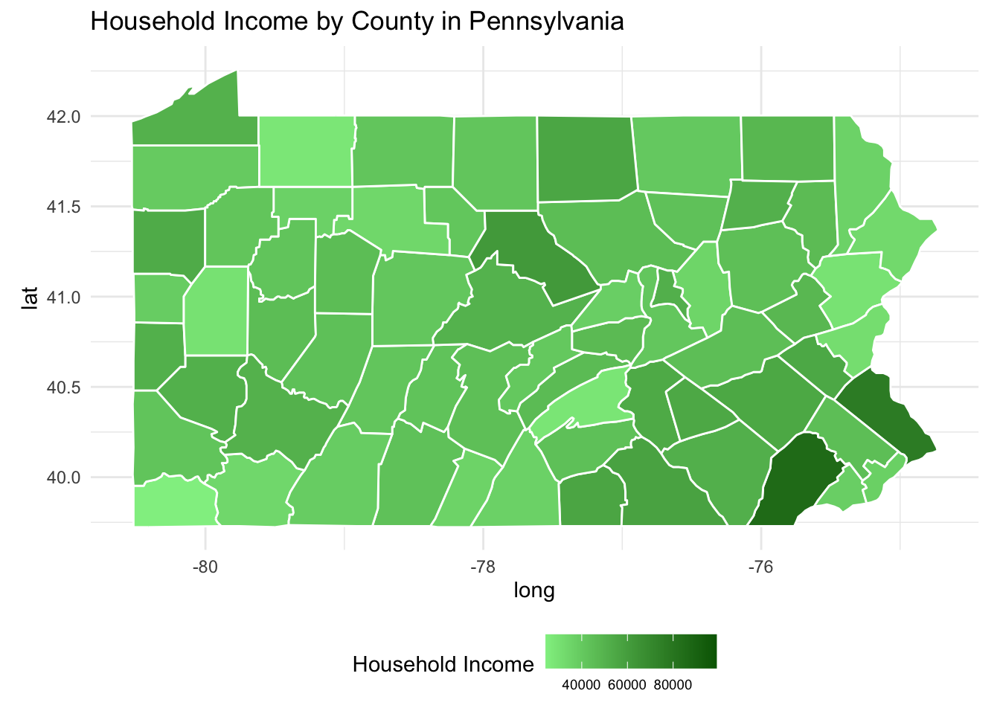
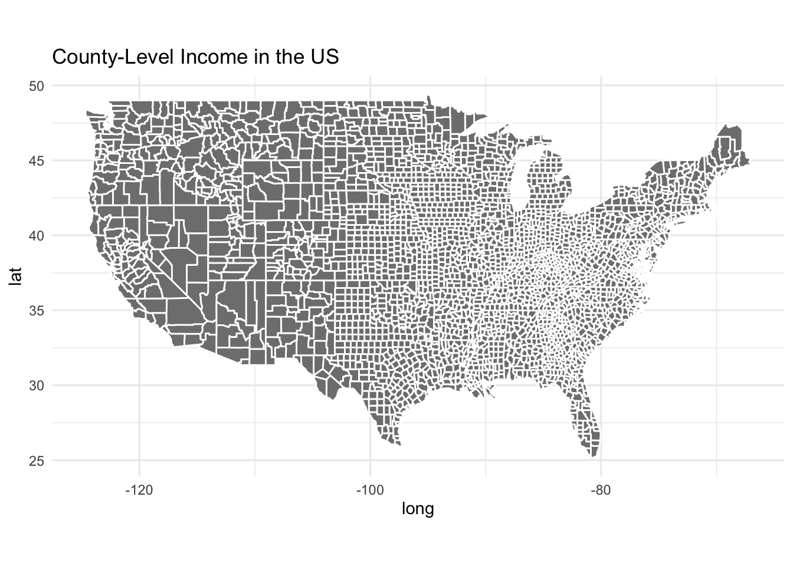

library(juanr)
data("elections")Bernhard_Week8
Week 8 Assignment
Tasks: make a country level world map or region map where countries filled by some variable using rnaturalearth, make a county-level chloropleth map using county_data from socviz
Loading Data
Plots
Pennsylvania Map
library(ggplot2)
library(maps)
library(dplyr)
Attaching package: 'dplyr'The following objects are masked from 'package:stats':
filter, lagThe following objects are masked from 'package:base':
intersect, setdiff, setequal, union# Adjusting county names in the elections dataset to match the map data format
elections$cleaned_name <- tolower(gsub(" County", "", elections$name))
# Creating a map data frame for Pennsylvania counties
penn_map <- map_data("county", "pennsylvania")
# Merging the map data with your cleaned election data
penn_data <- penn_map %>%
left_join(elections, by = c("subregion" = "cleaned_name"))Warning in left_join(., elections, by = c(subregion = "cleaned_name")): Detected an unexpected many-to-many relationship between `x` and `y`.
ℹ Row 1 of `x` matches multiple rows in `y`.
ℹ Row 256 of `y` matches multiple rows in `x`.
ℹ If a many-to-many relationship is expected, set `relationship =
"many-to-many"` to silence this warning.# Creating the map
ggplot(penn_data, aes(long, lat, group = group, fill = hh_income)) +
geom_polygon(color = "white") +
scale_fill_gradient(low = "lightgreen", high = "darkgreen", na.value = NA) +
coord_fixed(1.3) +
labs(fill = "Household Income", title = "Household Income by County in Pennsylvania") +
theme_minimal() +
theme(legend.position = "bottom",
legend.text = element_text(size = 7))
County-level Cloropleth Map
library(socviz)
# Load the county_data dataset
data("county_data", package = "socviz")
# Since the county_data dataset may not have a direct mapping to the map_data's county names,
# we need to ensure that the county identifiers match. Let's use FIPS codes for this purpose.
# The map_data function from ggplot2 can be used to get county boundaries based on FIPS codes.
# Prepare map data
county_map <- map_data("county")
# Merge the map data with county_data
merged_data <- county_map %>%
left_join(county_data, by = c("region" = "state", "subregion" = "name"))
# Choose a variable from county_data to visualize, for example, median household income
# Replace 'median_income' with the actual column name from county_data
# Create the choropleth map
ggplot(merged_data, aes(long, lat, group = group, fill = hh_income)) +
geom_polygon(color = "white") +
coord_fixed(1.3) +
labs(fill = "Household Income", title = "County-Level Income in the US") +
theme_minimal() +
theme(legend.position = "bottom")